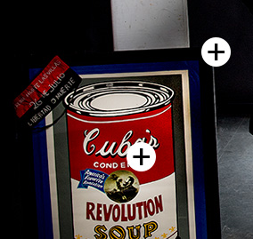
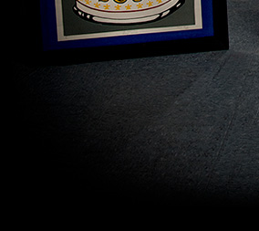
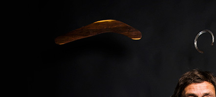
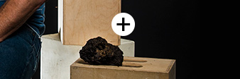

<
>
Richard Wamai
Richard Wamai, associate professor of cultures, societies, and global studies, is a scholar of global health. Born in Kenya, he directs Northeastern’s African American Studies program and the Integrated Initiative for Global Health. His research focuses on HIV/AIDS, neglected tropical diseases such as leishmaniasis, and health systems and policy.
Click on the icons above to learn about some of the interesting items, both academic and personal, that can be found in his office.
Sandra Shefelbine
Sandra Shefelbine, associate professor of mechanical and industrial engineering and bioengineering, is an expert in bone biomechanics and studies how the structure and composition of bones influence their mechanical properties.
Click on the icons above to learn about some of the interesting items, both academic and personal, that can be found in her office.

Charlie Bame-Aldred
Charlie Bame-Aldred, executive professor of accounting in the D’Amore-McKim School of Business, is a huge sports fan whose office in Hayden Hall is filled with sports memorabilia—and memories. He’s also the public address announcer for Northeastern athletics.
Click on the icons above to learn about some of the interesting items, both academic and personal, that can be found in his office.
Daniel Medwed
Daniel Medwed, professor of law and criminal justice in Northeastern’s School of Law, focuses his research and pro bono activities on the topic of wrongful convictions.
Click on the icons above to learn about some of the interesting items, both academic and personal, that can be found in his office.
 |
||
|  | ||
|  |
José F. Buscaglia
Professor José F. Buscaglia is a historian of ideas and critic of ideology in the modern-colonial world. He chairs the newly founded Department of Cultures, Societies, and Global Studies and directs the Center for International Affairs and World Cultures. He has studied the Caribbean and Latin America extensively throughout his career and was a pioneer in study abroad programs by American institutions to Cuba, where he was the first professor from a U.S. university since the revolution of 1959 to teach a regularly scheduled yearly seminar at the University of Havana. Buscaglia has played a key role in establishing Northeastern’s partnerships in Cuba, and was a member of a delegation of faculty and staff who visited Cuba in early 2017.
Click on the icons above to learn about some of the interesting items, both academic and personal, that can be found in his office.

Sarah Jackson
Sarah J. Jackson, assistant professor of communication studies in the College of Arts, Media and Design, is an expert on social movements and how social and political identities are constructed and debated in U.S. culture.
Click on the icons above to learn about some of the interesting items, both academic and personal, that can be found in her office.
Mai’a Cross
Mai’a Cross is the Edward W. Brooke Professor of Political Science and associate professor of political science and international affairs at Northeastern. Her research focuses on European politics, particularly in the areas of foreign and security policy, epistemic communities, crises, and diplomacy. She’s written three books on the topics, and, prior to her career in political science, studied at the School of American Ballet, the associate school of the New York City Ballet.
Click on the icons above to learn about some of the more interesting items that can be found in her office.
James Monaghan
James Monaghan, assistant professor of biology, studies axolotl salamanders, which have a remarkable ability to regrow limbs and other body parts. In his lab, Monaghan and his students analyze the genomes of axolotls in an attempt to identify factors that are required for regeneration.
You can find many of these salamanders, as well as a range of interesting items, in his lab and office. Click on the icons above to learn about some of these items.

Ravi Ramamurti
Ravi Ramamurti, Distinguished Professor of International Business and Strategy and director of the Center for Emerging Markets, is frequently called upon for his expertise in corporate strategy and business-government relations. He’s served as a consultant to firms or governments in Argentina, Bangladesh, Bolivia, Ecuador, Egypt, India, Indonesia, Malaysia, Mexico, Nicaragua, Saudi Arabia, and South Korea. He also helped prepare the United Nations Conference on Trade and Development’s World Investment Report in 2008, and has had work published in numerous scholarly journals throughout his decades-long career.
Click on the icons above to learn about some of the more interesting items that can be found in Ravi’s office.
 |
|
|  | |
|  | |
Slava Epstein
Slava Epstein, Distinguished Professor in the College of Science, has led groundbreaking research in microbiology through the development of the iChip. The device—which is only a couple of inches in size—isolates and grows small colonies of individual bacterial cells in their natural environment, permitting researchers to access the 99 percent of soil-based microorganisms that won’t grow in a lab. When he’s not hard at work, Epstein can often be found exploring some of the world’s many countries and cultures—including some of the least developed corners of the globe. Here are a few of the items he keeps in his office, many of which he’s collected from his travels.
Click on the icons above to learn about some of the more interesting items that can be found in Roger’s office.


Roger Abrams
Roger Abrams is the Richardson Professor of Law at Northeastern. He is a prolific author and leading authority on sports and labor law and legal education. He has served as a salary arbitrator for Major League Baseball and as a permanent arbitrator for the television, communications, electronics, and coal industries, as well as for the U.S. Customs Service, Internal Revenue Service, Walt Disney World, the State of Florida, and Lockheed-Martin Company. Last year, he was appointed as an American arbitrator for the Court of Arbitration for Sport in Lausanne, Switzerland.
Click on the icons above to learn about some of the more interesting items that can be found in Roger’s office.

Amy Lu
Assistant professor Amy Lu holds joint appointments in the College of Arts, Media and Design and the Bouvé College of Health Sciences. She directs the Health Technology Lab, and studies the persuasive mechanism of media and communication technologies and their health behavioral and psychological applications.
Click on the icons above to learn about some of the more interesting items that can be found in Amy’s office.
Taskin Padir
Taskin Padir, associate professor in the Department of Electrical and Computer Engineering, is an expert in modeling and control of robotic systems. He is leading a Northeastern team doing advanced research and development work on humanoid robot prototypes for NASA.
Click on the icons above to learn about some of the more interesting items that can be found in Taskin’s office.